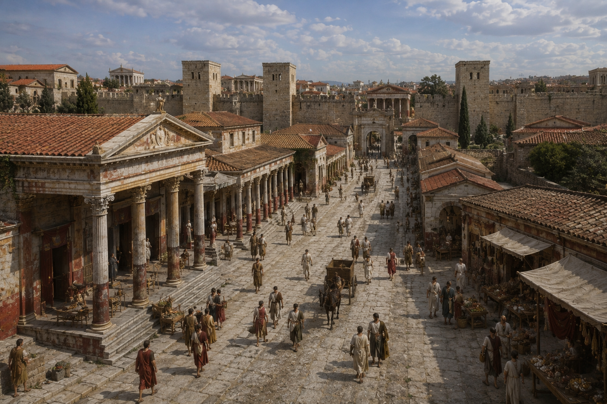
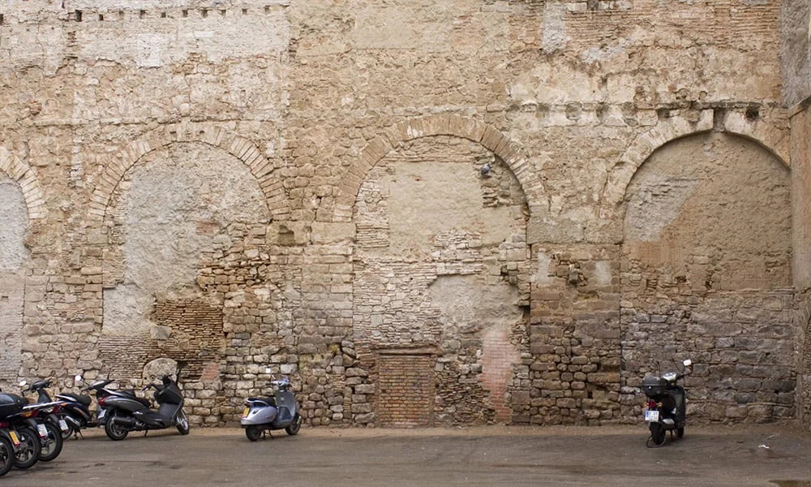

La pequeña localidad creada hacia el año 15 a.C. y bautizada como Colonia Iulia Augusta Faventia Paterna Barcino nos ha legado infinidad de rincones que merece la pena descubrir sin prisas.

Cuando llegaron los romanos, entre los años 15 y 13 a. C., buscaban el mejor sitio para fundar una colonia situada entre las prósperas Emporiae (Empúries), en la costa norte, y Tarraco (Tarragona), en la costa sur. El lugar escogido fue la cima del Mons Taber, un pequeño cerro frente al mar que dominaba la llanura, donde actualmente se encuentra la plaza de Sant Jaume. No les costó demasiado hacerse con el control de los asentamientos de los alrededores. La colonia, con el nombre completo de Iulia Augusta Faventia Paterna Barcino, creció rápidamente, y entre los siglos I y II se amuralló, se reforzaron las murallas entre los siglos III y IV y se delimitó un perímetro que se mantendría hasta la Edad Media. También se mantuvo la estructura propia de una ciudad romana, con un foro en el centro del que salían dos calles en forma de cruz, el cardus y el decumanus, que conducían a las cuatro puertas de acceso.
Esta estructura se puede recorrer todavía en la actualidad: la calle de la Llibreteria, que nace en la plaza del Àngel, donde estaba la Porta Sinistrade las murallas, es el antiguo cardus que cruzaba la ciudad de norte a sur, hasta la denominada Porta Dextra, al final de la actual calle del Call; la plaza de Sant Jaume, en el centro, se extiende un poco más al sureste de donde entonces se encontraba el foro; y las calles del Bisbe, de la Ciutat y del Regomir recorren el antiguo decumanus desde la Porta Praetoria, en el oeste, hasta la Porta Decumana o puerta de Mar, en el este.
Algunas más destacables son:
A priori, cuesta imaginar que el interior del bloque de viviendas de la recoleta calle del Paradís, 10, dé cabida a cuatro columnas de orden corintio y un fragmento del friso de un templo romano. Se trata del templo de Augusto, levantado a finales del siglo I a.C., y del que se sabe que en el siglo V aún seguía en pie, aunque muy deteriorado.
La otra gran casa de la Barcelona romana que puede visitarse se encuentra en el barrio judío o Call, en la calle de la Fruita, 2. Esta domus del siglo IV d.C. conserva un jardín interior (viridarium), de unos 100 m2 y un estanque central (lacus) circundado de un pasillo porticado (peristilum) con un llamativo pavimento de mosaico (opus musivum).
Antes de levantar la primera muralla de Barcelona, los romanos construyeron un acueducto que abastecería la nueva colonia con agua del río Besós. De ahí que esté considerado como la primera obra pública de Barcino. Oculto durante siglos tras edificios posteriores, este concienzudo trabajo de ingeniería ha conservado cuatro arcos en el muro de una construcción del siglo XVIII, situada en la plaza del Vuit de Març.
